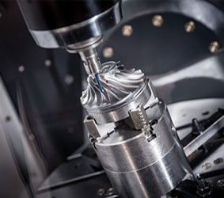

工业自动化机械有哪些检验？
2019-10-22
工业自动化机械有哪些检验？
撕破检验：
这是普遍采用一种简便的现场工业检验方法，试片的材料牌号、厚度、表面准备及焊接规范参数均与焊件安全相同，检验时，根据试片撕开后焊点的形状及其直径来判断焊接质量。
撕破检验后，检查留在一侧板材上的结合处的焊点，其直径或宽度应满足检验标准的要求，对于军用产品，一级标准要求每批撕破试片中，应有95%的焊点呈纽扣状撕破，其余5%的焊点可在贴合面熔化区撕开，但熔化区尺寸至少是纽扣平均尺寸的80%，民用或非重要构件生产时撕破检验要求可适当降低。

低倍检验：
低倍检验的目的，是确定焊点熔核直径、焊透率、压痕深度和宏观缩孔、裂纹等缺陷存在的状况，检验时，试片从焊点中心横向或纵向的中心切开，经磨光和腐蚀后，用20倍以下读数放大镜观察。
一般要求焊透率不得小于板厚的20%，不得超过板厚的80%，低倍检验应制备2-3个试片，不应取点焊试样上个焊点做低倍试片。
低倍检验对熔核中的气孔、缩孔及裂纹扥缺陷，规定了允许的限度，例如，航空焊件上，允许存在于熔核中的气孔和缩孔的直径0.5mm，并且不允许出现裂纹和喷溅。
在切割低倍试验片时，应注意避免金属过热和变形，并要保证磨片的表面与焊点中心重合，以真实焊点熔核直径。
磨片的腐蚀液成分应根据金属材料的选择，低倍检验还可测定电极压痕深度，一般规定点焊焊点上压痕深度不超过板材厚度的20%。
上一篇：工业电焊机有哪些注意事项？...
下一篇：工业焊机的应用领域有哪些？...